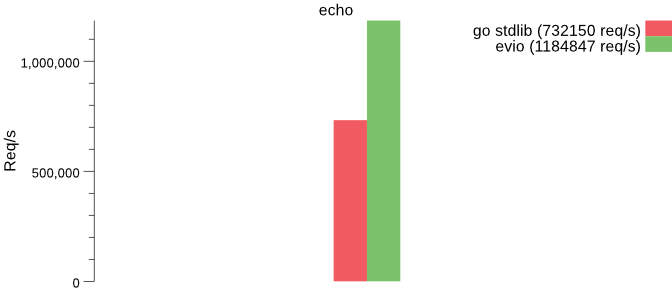
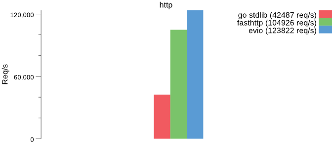
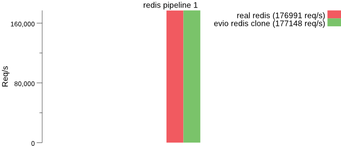
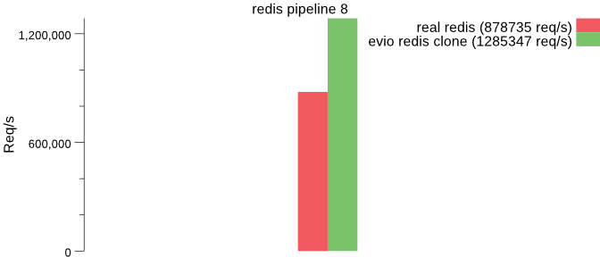

我们知道， Go语言为并发编程提供了简洁的编程方式， 你可以以"同步"的编程风格来并发执行代码， 比如使用go关键字新开一个goroutine。 对于网络编程，Go标准库和运行时内部采用 epoll/kqueue/IoCompletionPort来实现基于 event-loop的网络异步处理，但是通过netpoll的方式对外提供同步的访问。具体代码可以参考 runtime/netpoll、net和internal/poll。
Package poll supports non-blocking I/O on file descriptors with polling.
This supports I/O operations that block only a goroutine, not a thread.
This is used by the net and os packages.
It uses a poller built into the runtime, with support from the
runtime scheduler.
当然，我们平常不会设计到这些封装的细节，正常使用net包就很方便的开发网络程序了， 但是，如果我们想自己实现基于epoll的 event-loop网络程序呢？
基于epoll的简单程序
man epoll可以查看epoll的相关介绍。下面这个例子来自tevino， 采用edge-triggered方式处理事件。
它采用 syscall.Socket、syscall.SetNonblock、syscall.Bind、syscall.Listen系统调用来监听端口，然后采用syscall.EpollCreate1、syscall.EpollCtl、syscall.EpollWait来关联这个监听的file descriptor， 一旦有新的连接的事件过来，使用syscall.Accept接收连接请求，并对这个连接file descriptor调用syscall.EpollCtl监听数据事件。一旦连接有数据ready, 调用syscall.Read读数据，调用syscall.Write写数据。
|
|
上面的基于epoll只是一个简单的event-loop处理原型，而且在有些平台下(MAC OS)也不能执行，事件的处理也很粗糙，如果你想实现一个完整的event-loop的网络程序， 可以参考下节的库。
evio
evio是一个性能很高的event-loop网络库，代码简单，功能强大。它直接使用 epoll和kqueue系统调用，除了Go标准net库提供了另外一种思路， 类似libuv和libevent。
这个库实现redis和haproxy等同的包处理机制，但并不想完全替代标准的net包。对于一个需要长时间运行的请求(大于1毫秒)， 比如数据库访问、身份验证等，建议还是使用Go net/http库。
你可能知道， 由很多基于event-loop的程序， 比如Nginx、Haproxy、redis、memcached等，性能都非常不错，而且它们都是单线程运行的，非常快。
这个库还有一个好处， 你可以在一个event-loop中处理多个network binding。
一个简单的例子：
|
|
作者对性能做了对比，性能非常不错。



